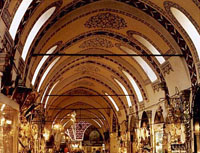

| Kapalıçarşı'nın temeli 1461 yılında atılmıştır. Dev ölçülü bir labirent gibi, 30.700 metrekarede 66 kadar sokağı, 4.000 kadar dükkânı ile Kapalıçarşı, İstanbul’un görülmesi gereken, benzersiz bir merkezidir. Adeta bir şehri andıran, bütünü ile örtülü bu site zaman içerisinde gelişip büyümüştür. İçinde son zamanlara kadar 5 cami, 1 mektep, 7 çeşme, 10 kuyu, 1 sebil, 1 şadırvan, 24 kapı, 17 han vardı. Fatih Sultan Mehmet tarafından yaptırılmıştır. 15. yüzyıl'dan kalan kalın duvarlı, bir seri kubbe ile örtülü eski iki yapının etrafı sonraki yüzyıllarda, gelişen sokakların üzerleri örtülerek, ekler yapılarak bir alışveriş merkezi haline gelmiştir. Geçmişte burası her sokağında belirli mesleklerin yer aldığı ve bunların da, el işi imalatının (manifaktür) sıkı denetim altında bulundurulduğu, ticari ahlak ve törelere çok saygı gösterilen bir çarşı idi. Her türlü değerli kumaş, mücevherat, silah, antika eşya, konusunda nesillerce uzmanlaşmış aileler tarafından, tam bir güven içinde satışa sunulurdu. Geçen yüzyılın sonlarında deprem ve birkaç büyük yangın geçiren Kapalıçarşı eskisi gibi onarılmışsa da, geçmişteki özellikleri değişikliğe uğramıştır. |